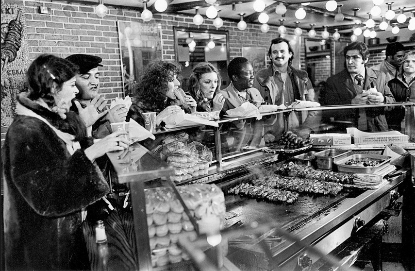

A cache of [Kenneth] Siegel’s photographs from the ’70s, which included these images of the the “S.N.L.” cast and the others taken in Times Square, were given to the New-York Historical Society in 2008. Tom Schiller, who produced short films and wrote for “S.N.L.,” says that after each week’s show was finished, everyone headed downtown to One Fifth Avenue (now Otto) for an afterparty — not, usually, to Greek joints. “It’s rare to see them all lined up like that,” Schiller says. “It’s weird and wonderful.” (source)